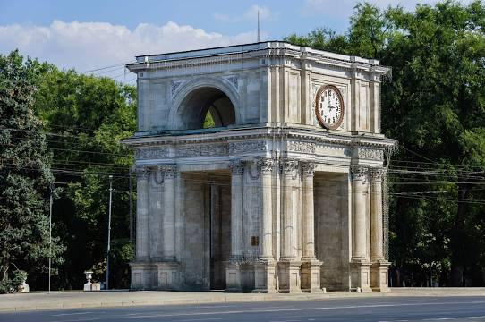

"Orasul meu - Chisinau"
Chișinău este capitala, cel mai mare oraș și centrul administrativ, teritorial, economic, științific și cultural al Republicii Moldova. Orașul este așezat la o margine a pantei de sud-est a Podișului Central al Moldovei, în zona de silvostepă, fiind străbătut de râul Bâc, un afluent de dreapta al Nistrului.
Chișinăul este legat prin căi ferate și drumuri cu toate municipiile, orașele și centrele raionale și multe sate din republică, de asemenea cu centre urbane din România, Ucraina, Bulgaria, Turcia, Belarus, Rusia și alte state. Din punct de vedere administrativ, este divizat în cinci sectoare: Centru, Botanica, Buiucani, Râșcani și Ciocana. Organul local al puterii de stat este Primăria municipiului (Consiliul municipal).
Chișinăul este supranumit „Orașul din piatră albă”. Respectivul supranume provine din abundența clădirilor deschise la culoare, fiind construite din piatra albă de calcar. Printre altele, primul vers din forma actuală a imnului orașului Chișinău, intitulat Orașul meu (muzică: Eugen Doga, versuri: Gheorghe Vodă), este: Orașul meu din albe flori de piatră. Forma anterioară a primului vers din imn era: Orașul meu cu umeri albi de piatră
Locuri de vizitat:
Parcul Stefan cel Mare
Grădina Publică „Ștefan cel Mare și Sfânt” este cel mai vechi parc din Chișinău, Republica Moldova. A fost conceput și amenajat în manieră clasică.

Muzeul Național de Etnografie și Istorie Naturală
Muzeul Național de Etnografie și Istorie Naturală este un muzeu din municipiul Chișinău, situat pe str. Mihail Kogălniceanu, 82. A fost creat în octombrie 1889 în baza colecției exponatelor primei expoziției agrare din Basarabia, organizată sub inițiativa baronului A. Stuart.
Edificiul muzeului (oficial – „Clădirea Muzeului Național de Etnografie și Istorie Naturală, fost Muzeu zoo-agricol și a meșteșugurilor populare”) este un monument de arhitectură de însemnătate națională, introdus în Registrul monumentelor de istorie și cultură a municipiului.

Arc de triumf
Un arc de triumf este un monument în formă de portic arcuit, cu una sau mai multe arcade, decorat bogat cu basoreliefuri și inscripții, amplasat pe o arteră de circulație sau într-o piață, ridicat pentru a sărbători o victorie militară (când pe sub el treceau cortegiile triumfale) sau în amintirea unui alt fapt însemnat.
Primele arcuri de triumf au fost construite de romani în Antichitate, fiecare fiind dedicat unui general victorios, iar modelul acestora a fost reluat în arhitectura modernă.
